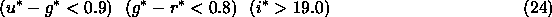

Images of quasars are characterized in the optical by high luminosity and very high surface brightness, making them morphologically indistinguishable from stars at all but very low redshifts ( at the resolution of the SDSS). Quasar spectra, however, are characterized by roughly power-law continua and strong emission lines; as a result, quasar spectra are quite distinct from the roughly black-body spectra of stars.
The dominance of the continuum on the colors of quasars is
severely reduced because of absorption by the Ly forest and
Lyman-limit systems (at rest wavelengths below Å and
Å, respectively). For the SDSS filter set, absorption
by the Ly
forest and
Lyman-limit systems (at rest wavelengths below Å and
Å, respectively). For the SDSS filter set, absorption
by the Ly forest is significant for , and quasars
become increasingly red with larger redshift
fan99a,richards01a. Fortunately, this effect also gives
quasars colors that are distinctly different from those of normal
stars.
forest is significant for , and quasars
become increasingly red with larger redshift
fan99a,richards01a. Fortunately, this effect also gives
quasars colors that are distinctly different from those of normal
stars.
Models of quasars by fan99a show that the quasar locus is indeed well-separated from the stellar locus except at z = 2.7-2.8, where quasars have SDSS broad-band colors that are essentially indistinguishable from early F and late A stars. Thus the majority of quasars have colors quite distinct from those of stars, which, unlike quasars, lie on a nearly one-dimensional locus in color-color-color-color space newberg97, fan99a, finlator00. Using this property, we identify quasar candidates primarily as outliers from the stellar locus in this 4-color space. This algorithm is described in more detail by richards01b.
The quasar target selection algorithm first models the stellar locus,
following newberg97, as an elongated tube with an elliptical
cross-section. In practice, this is done in two stages, once for the
color cube, and once for the color cube. The PSF colors of each object are examined
in turn, and it is determined whether they are consistent with lying inside
the stellar locus, incorporating the photometric errors. The
quoted errors in PSF magnitudes from frames are used, after adding
 0.03 mag errors in quadrature in each color to reflect the
uncertainty in the photometric calibration. Quasar candidates are
those objects which lie more than from the stellar locus. Colors are
measured using PSF magnitudes, and are corrected for reddening using
schlegel98 throughout.
0.03 mag errors in quadrature in each color to reflect the
uncertainty in the photometric calibration. Quasar candidates are
those objects which lie more than from the stellar locus. Colors are
measured using PSF magnitudes, and are corrected for reddening using
schlegel98 throughout.
The quantity objFlags in class photoObj uses the bitmasks in Table 9 to indicate objects whose photometry (and therefore, colors) may be in error. In particular, we reject objects flagged as BLENDED (although we accept the deblended children of blended parents), BRIGHT, SATURATED, or EDGE in any band. Objects detected as MOVING at a rate greater than 0.2 pixels per frame with high significance are rejected as asteroids (although this rejection is no longer needed in the current algorithm; asteroids have colors that put them cleanly in the stellar locus; ivezic01). Deblended children with PEAKCENTER, NOTCHECKED, or DEBLEND_NOPEAK set in any band are signs of deblending problems; these objects are also rejected. Objects with INTERP_CENTER set have a cosmic ray or bad column within 3 pixels of their center; empirically, we find that many false quasar candidates are found with and this flag set, so we reject all such objects. There are a few bad columns which are not properly interpolated over by the photometric pipeline, and so we reject objects in CCD columns 1019-1031 in camCol 5.
Main Quasar Sample
At one point, we had considered separate criteria in regions of high and low stellar density, as we were concerned about changing stellar populations at low latitudes. For this reason, objects that pass the main quasar target selection criteria have the TARGET_QSO_CAP (referring to the Galactic cap) or TARGET_QSO_SKIRT (the ring around Galactic cap region), target mask bit set in primTarget of class specObj, depending on their Galactic coordinates and, in particular, the estimated stellar density from the bahcall80 model. However, we found that the effectiveness of the algorithm was independent of stellar density, so the selection of the two is identical.
An outlier from the color cube is a quasar candidate if it passes the above gauntlet of tests and has . The bright limit is set to avoid problems with cross-talk in the spectrographs. As indicated in Table 29, the bright limit used for target version v2.2.a, runs 752 and 756 was . The object need not be stellar if it lies blueward of the main galaxy locus; this allows low-redshift AGN, whose host galaxy is visible, to be selected.
We reject some quasar candidates if they have colors that match known types of
stars which lie outside the main stellar locus. In particular, hot
white dwarfs are excluded when
- and
unresolved M dwarf-white dwarf pairs are excluded when
and A stars are excluded when
The quasar locus crosses the stellar locus for quasars of , so
we include target objects when
even if they are not outliers from the stellar locus.
Each of these three regimes of stars were rejected in the EDR data (as indicated in Table 29), except with target version v2.2a, runs 752 and 756, when only the A star rejection was applied. Inclusion of objects in the region where the stellar and quasar loci cross was performed for all three versions of target used for the EDR.
The SDSS catalog is matched against the FIRST catalog of radio sources becker95, and stellar objects with radio counterparts within and are selected, using the mask bit TARGET_QSO_FIRST_CAP or TARGET_QSO_FIRST_SKIRT depending on their position on the sky.
High Redshift Quasar Sample
The mask bit in primTarget we use for the high redshift quasar sample is TARGET_QSO_HIZ. Outliers from the stellar locus in the color cube with are selected, subject to the rejection criteria given above in equations 20, 21, and 22. Additionally, candidates must be classified as stellar, as they will have redshifts above z = 3.5 for the most part (see the discussion in Fan et al. 2001a). For target versions v2.5 and v2.7, we also targeted objects which lie in the region of color-color space for z > 3, are still outliers in the cube and have and , see Table 29.
Although low-redshift quasars manifest themselves most dramatically as
outliers in , they are also outliers in the color
cube, and would thus dominate the (nominally) high-redshift color cut, which
goes fainter than the main quasar sample. Therefore, we rejected very blue
objects that satisfy

even if they were outliers in the color cube.
Table 29 indicates that this rejection was not done in
target v2.2.a.
Faint, Reject, and Magnitude Outlier Objects
For target versions v2.2.a, v2.5, and v2.7, objects which lie outside the stellar locus, but are fainter than the magnitude limit, are flagged as TARGET_QSO_FAINT; they are not targeted, but are marked as being of potential interest. We emphasize, however, that the algorithm is not optimized fainter than , so the fraction of objects flagged as TARGET_QSO_FAINT that turn out to be quasars will decrease significantly with magnitude. Objects with this flag set will only have spectra if they were targeted by another module.
Performance of Quasar Target Selection
Quasar candidates are selected primarily as objects with colors distinct from stars, allowing the serendipitous discovery of a variety of objects of unusual color, including those that do not conform to ``standard'' quasar colors. It has thus found a number of very unusual BAL quasars, extreme emission-line galaxies, high-redshift (z > 0.7) starburst and post-starburst galaxies, and a handful of objects whose spectra defy classification.
This algorithm selects of order 15 objects per square degree. Our target efficiency requirement is that at least 65% of our quasar candidates should in fact be quasars. The EDR is very close to meeting this requirement, and we certainly expect future data releases to meet or exceed this requirement. The principal contaminants are compact blue star-forming galaxies at low redshift; A stars; white dwarfs and M dwarf-white dwarf pairs that the above color cuts don't completely remove; and a variety of exotica such as z > 0.4 compact E+A galaxies, whose Balmer break gives them colors very similar to z=4 quasars. Comparison with quasars from the literature shows that our completeness is of order 90%, which is consistent with our completeness requirement. Known quasars that are not targeted are rejected for a wide variety of reasons: many are due to cosmetic defects, and many z=3.5 and z=4.5 quasars are missing due to problems with the quasar target selection code, which have been corrected since target was run to define the plates in the EDR.